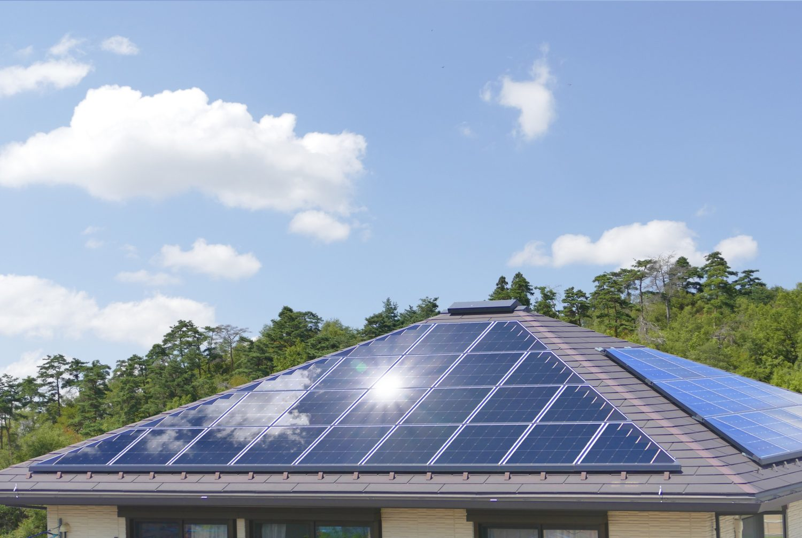

相続手続きのサポート
100種類を超える手続きを、まとめてお任せください。
相続の手続きは、
100種類を超えるといわれます。
相続手続きは数が多く、期限の短いものもあって大変です。「時間がない」「窓口のやり取りに疲れた」という声も。当事務所が調査から手続きの代行まで一括対応し、ご負担を軽くします。
ALL IN ONE
わずらわしい手続きを代行いたします
相続人の確定、財産調査、遺産分割協議書の作成、各種名義変更まで。不動産や預貯金はもちろん、太陽光発電（ソーラーパネル）の名義変更にも対応します。複数の窓口が必要な手続きをまとめて代行しますので、何から始めればいいか分からない方もご安心ください。
- 戸籍収集による相続人の確定
- 預貯金・不動産・有価証券などの財産調査
- 遺産分割協議書の作成
- 不動産・預貯金の名義変更、太陽光発電（ソーラーパネル）の名義変更

こんな方におすすめです
- 葬儀後、何から手続きすればいいのか分からない方
- 仕事や家事で忙しく、手続きの時間がとれない方
- 相続放棄など、期限のある手続きを検討している方
- 遠方に相続財産があり、手続きが進められない方
Flow
手続きの流れ
ご相談・状況の確認
相続の状況やお困りごとをお伺いし、必要な手続きを整理します。
相続人・財産の調査
戸籍を収集して相続人を確定し、財産の内容を調査します。
遺産分割協議書の作成
相続人の皆さまの合意内容をまとめ、遺産分割協議書を作成します。
各種手続きの代行
預貯金の解約や名義変更など、必要な手続きを代行し、完了をご報告します。
FAQ
よくあるご質問
Q相続手続きには、いつまでに行うべきものはありますか？
相続放棄は原則3か月以内、相続税の申告は10か月以内など、期限のある手続きがあります。早めにご相談いただくことで、安心して進めることができます。
Q必要な書類が何か分かりません。
ご相談時に状況をお伺いし、必要な書類をご案内します。戸籍などの収集も当事務所で代行できますので、ご安心ください。
Q相続税や登記の相談もできますか？
相続税の申告は税理士、不動産の登記は司法書士が担当します。当事務所では、信頼できる専門家と連携してワンストップでご対応します。
Related